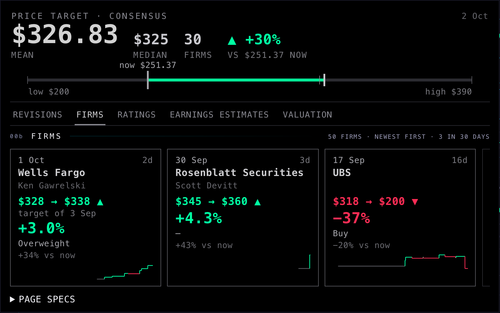
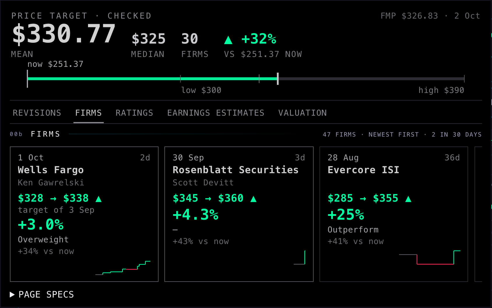
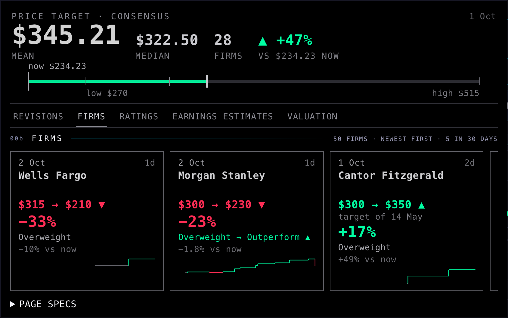
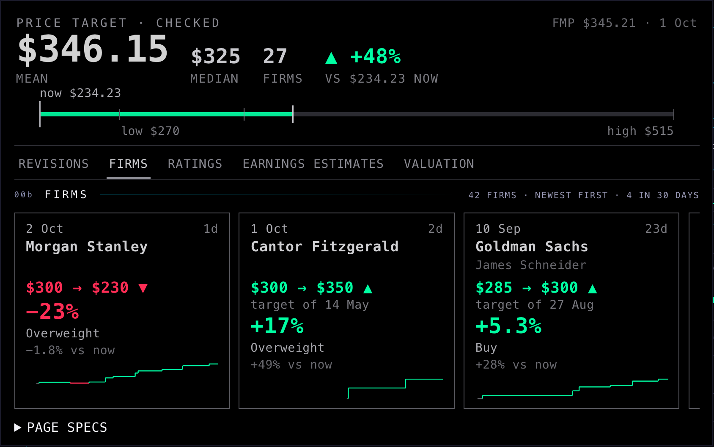
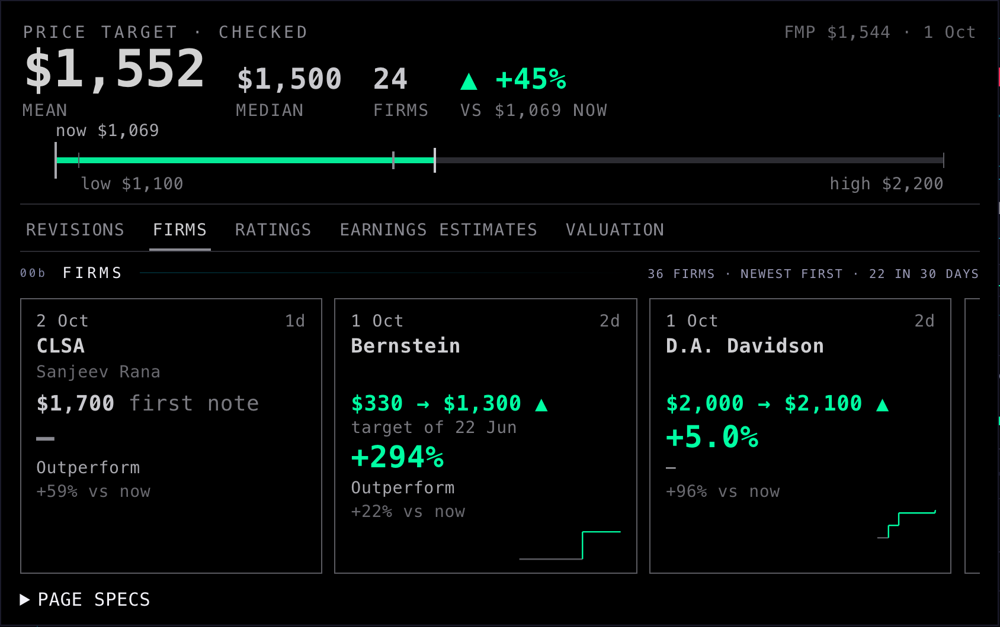
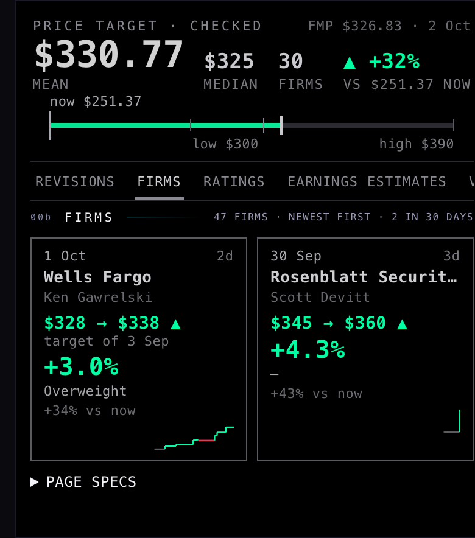

A3 · The analysts tab
ESTIMATES, 3 Oct 2026 · AMZN, NVDA, MU · headless screenshots, 1680 × 1050 (and phone 390) · not deployed · branch hub/a3-analysts-tab-20261003
A4 · Analyst targets you can trust (3 Oct, later)
Every stored analyst row checked; junk quarantined, nothing deleted; the consensus cross-checked against FMP’s. Branch hub/a3-analysts-tab-20261003 only — the live Hub is unchanged until you approve.






What was wrong, row by row
66,639 rows checked (30,906 price targets, 35,733 ratings). 3,431 quarantined: 1,517 targets (4.9%) and 1,914 ratings (5.4%). Each row is counted once, under its first cause.
| Cause | Targets | Ratings | What it means · a real example |
|---|---|---|---|
not_about_target | 361 | 0 | The headline is not about a price target at all, and names no firm. AMZN 17 Sep · “FTC announces additional payments to consumers from Amazon Prime settlement” filed as UBS $200 |
not_about_rating | 0 | 1,082 | The headline is not about a rating at all, and names no firm. AMGN · “Amgen Options Trading: A Deep Dive into Market Sentiment” filed as a Citigroup Neutral |
firm_mismatch | 1,000 | 761 | The headline names a different firm, never this one (short names like Baird, Citi, BofA count as the firm). NVDA 2 Oct · “Morgan Stanley Renames NVIDIA to Top Pick” filed as Wells Fargo $210; LCID · “Lucid Capital Markets Starts Tvardi Therapeutics” filed under Lucid Group as Loop Capital |
number_mismatch | 13 | 0 | The headline states the new target and it is a different number. SPGI · “lowered to $472 from $493 at Baird” stored as $493 (the old target) |
price_not_this_stock | 26 | 3 | The headline doesn’t name the firm and the price when posted is >30% off the same stock’s other notes that week: another stock’s note. ABT · “… Here Are Top 5 Initiations”: Roth $50 at “$54” while Abbott traded near $115 |
target_vs_price | 35 | 0 | The target is more than 3× or under ⅓ of the price when posted (5× / ⅕ when the headline names the firm), and the headline doesn’t state that number. COIN · “This Coinbase Analyst Turns Bullish; Here Are Top 5 Upgrades”: $875 at $267 |
jump_vs_firm_prior | 49 | 0 | The target moved more than 2× (4× when the firm is named) from the same firm’s previous target within a year, after taking out the stock’s own move. GOOGL · “Analyst Upgrade Drives Uber To 2-Year High”: Roth $59 on Alphabet at $121 |
duplicate | 33 | 68 | The same firm, stock and target (or rating) again within 3 days: a second copy of one note. The first copy stays. UNH · Piper Sandler $477 twice, seven minutes apart, from two publishers |
| Total | 1,517 | 1,914 |
Kept but marked: 811 targets where FMP never applied a later split (MNST 2:1 on 11 Aug, APH 2:1 on 3 Sep, FDX/HON spin-off adjustments) — the note is real, so it stays, with our own split-adjusted number.
The coordinator’s two counts, explained. “Firm not in the headline”: 10,236 target headlines don’t spell FMP’s firm name; 6,038 of them use a short name (Baird, Truist, Citi, BofA…) and are fine; 1,005 name a different firm (quarantined); 245 are roundups; 2,948 name no firm (kept unless another check fails). “Target over 3× or under ⅓ of the price”: 860 rows; 102 quarantined, 55 are split-adjustment mix-ups that the corrected number explains, 475 have the headline saying that exact number (often FMP’s price is the unadjusted one), 228 kept on the firm’s named headline within the wider 5× band.
Our consensus against FMP’s
Before the check, ours matched FMP’s mean on 447 of 452 stocks (within 1%). So FMP’s consensus is built from these same notes, junk included — it is not an independent second opinion. After the check: 363 of 452 agree; 89 differ, every one because of rows the check removed or corrected. The 20 widest gaps:
| Stock | FMP mean | Ours before | Ours after | After vs FMP | Firms | Why they still disagree |
|---|---|---|---|---|---|---|
| MNST | $98.22 | $98.22 | $49.11 | −50.0% | 9 → 9 | RBC Capital: $97 was never split-adjusted → $48.50; Redburn Partners: $90 was never split-adjusted → $45; Evercore ISI: $95 was never split-adjusted → $47.50; +6 more |
| APH | $164.67 | $164.67 | $98.92 | −39.9% | 6 → 6 | UBS: $197 was never split-adjusted → $98.50; Robert W. Baird: $177 was never split-adjusted → $88.50; Truist Financial: $200 was never split-adjusted → $100; +1 more |
| SW | $71.50 | $71.50 | $55.17 | −22.8% | 8 → 6 | Loop Capital Markets $71 out (firm mismatch — headline: J.P. Morgan); Nomura $170 out (firm mismatch — headline: Kepler Capital) |
| LCID | $7.60 | $7.60 | $6 | −21.1% | 5 → 4 | Loop Capital Markets $14 out (firm mismatch — headline: Lucid Capital) |
| GDS | $43.50 | $43.50 | $51 | +17.2% | 2 → 1 | Piper Sandler $36 out (firm mismatch — headline: Cowen & Co.) |
| CHTR | $165.90 | $165.90 | $141 | −15.0% | 10 → 9 | UBS $150 → $140 (firm mismatch — headline: RBC Capital); Williams Trading $380 out (firm mismatch — headline: Cowen & Co.) |
| ACHR | $12.50 | $12.50 | $10.67 | −14.7% | 4 → 3 | Wells Fargo $18 out (firm mismatch — headline: H.C. Wainwright) |
| SPIR | $20.50 | $20.50 | $23.25 | +13.4% | 3 → 2 | Industrial Alliance Securities $15 out (firm mismatch — headline: Alliance Global Partners) |
| BTDR | $19.60 | $19.60 | $17.67 | −9.9% | 5 → 3 | Industrial Alliance Securities $23 out (firm mismatch — headline: Alliance Global Partners); Coker Palmer $22 out (firm mismatch — headline: Benchmark) |
| SHAZ | $61.67 | $61.67 | $67.50 | +9.4% | 3 → 2 | UBS $50 out (firm mismatch — headline: Lucid Capital) |
| GM | $92.90 | $92.90 | $101 | +8.7% | 10 → 10 | UBS $33 → $114 (firm mismatch — headline: Cowen & Co.) |
| JOBY | $15.33 | $15.33 | $14 | −8.7% | 3 → 2 | Susquehanna $18 out (firm mismatch — headline: H.C. Wainwright) |
| HUT | $160.54 | $160.54 | $147.10 | −8.4% | 13 → 10 | Compass Point $195 out (firm mismatch — headline: Benchmark); Loop Capital Markets $226 out (firm mismatch — headline: Lucid Capital); Coker Palmer $195 out (firm mismatch — headline: StoneX) |
| MSTR | $252 | $252 | $233.75 | −7.2% | 11 → 8 | Credit Suisse $250 out (firm mismatch — headline: BTIG); Industrial Alliance Securities $217 out (firm mismatch — headline: Alliance Global Partners); Coker Palmer $435 out (firm mismatch — headline: StoneX) |
| FDX | $307.55 | $307.55 | $327.45 | +6.5% | 11 → 11 | BMO Capital: $340 was never split-adjusted → $273.97; Wells Fargo $140 → $425 (firm mismatch — headline: Bank of America Securities) |
| STM | $77.31 | $77.31 | $72.58 | −6.1% | 8 → 6 | Raymond James $83 out (firm mismatch — headline: Bank of America Securities); UBS $100 out (firm mismatch — headline: Bank of America Securities) |
| CVX | $209.46 | $209.46 | $219.46 | +4.8% | 13 → 13 | UBS $250 → $220 (firm mismatch — headline: HSBC); HSBC $90 → $250 (number mismatch) |
| MRNA | $115.70 | $115.70 | $121.22 | +4.8% | 10 → 9 | UBS $81 → $150 (firm mismatch — headline: Redburn Partners); Loop Capital Markets $135 out (firm mismatch — headline: Brookline Capital) |
| FOXA | $72 | $72 | $68.71 | −4.6% | 8 → 7 | Fox Advisors $95 out (firm mismatch — headline: Citizens) |
| AU | $110.14 | $110.14 | $114.33 | +3.8% | 7 → 6 | UBS $85 out (firm mismatch — headline: RBC Capital) |
The two widest are not junk but splits. FMP keeps averaging MNST and APH targets set before their 2:1 splits. APH’s own notes since the split say about $100 (Barclays: target adjusted to $100 from $200). FMP’s $164.67 is out of date; ours is $98.92.
What could still be wrong
- A headline that names no firm and passes every other check stays in (2,948 targets): we can’t prove those right or wrong from the headline.
- Some real notes may be quarantined. Spot checks found false alarms on earnings days and on upgrades; the rules were widened for those (the price check now applies only when the firm isn’t named, and a jump is measured after the stock’s own move). Residual cases are possible.
- Rows the live collector stores before you approve the new one arrive unclassified. They show as before (not hidden), until the collector change is deployed.
- APH’s live quote reads $159.60, while its notes since the 2:1 split were posted near $83. The quote may not be split-adjusted. I did not check this.
- FMP’s own consensus feed and its notes feed share one source, so this is not a truly independent second opinion. A real one would need another vendor.
PAGE SPECS
- Rule set:
supabase/functions/analyst-revisions/quality.ts(one pure module) — used by the one-off fill (deliverables/20261003/a4-analyst-quality/tools/classify.mjs), the collector on the way in (analyst-revisions v3, not deployed) and the tests (tests/a4-analyst-quality-20261003.test.mjs). - Columns (additive, applied 3 Oct; rollback written first:
supabase/migrations/20261003_analyst_target_news_quality_ROLLBACK.sql):qualityok | quarantine,quality_reason(causes, hard first),adj_target_checked(target ÷ the splits after the note, frompublic.splits). No row deleted or changed: 66,639 before and after. - Firm aliases: ~150 firms, built from the stored rows (what the headline calls the firm vs FMP’s field), read by hand; plus names FMP never files (Citizens, Freedom Broker, Phillip Securities, Lucid Capital…) so a mismatch can be seen. A bank’s own name on its own stock doesn’t count (WFC: “Wells Fargo price target … at Barclays”).
- Bands: target / price when posted outside [⅓, 3] (firm not named) or [⅕, 5] (firm named); jump vs the firm’s previous kept target within 365 days, divided by the stock’s own move, outside [½, 2] or [¼, 4]; both waived when the headline states that number. Price check: ≥30% from the median price of the stock’s other notes within 2 days (≥2 neighbours), only when the firm isn’t named. Duplicate: same firm, target ±0.5% or same rating, within 3 days.
- Consensus (A3’s method): each firm’s newest target in the 183 days before FMP’s update stamp, weekly roundups out; before = every row and FMP’s
adj_target, after = non-quarantined rows andadj_target_checked. FMP =price_target_consensus, fetched by the existingfmp-analystjob (no new FMP call, no key used here). Agreement = means within 1%. Data:deliverables/20261003/a4-analyst-quality/data/. - Hub (branch only): the three
analyst_target_newsreads addor=(quality.is.null,quality.neq.quarantine); the price target block reads the firms’ checked notes, FMP’s mean beside the date. Pictures: headless Chromium, 1680 × 1050 and 390, before = A3 @570b7e1, same live data, 0 page errors, 0 writes.
Before → after (AMZN, the whole tab unrolled)


The firms, left to right


The other sub-tabs (AMZN)


As it opens on the screen (NVDA, 1680 × 1050)

Where each number comes from
| On the page | Source |
|---|---|
| Mean, median, low, high | FMP's price-target consensus (price_target_consensus), as stored. The date on the right is when FMP last updated it. |
| Number of firms | FMP doesn't give a count. We count the firms whose latest target falls in the 6 months (183 days) before FMP's update. That same group reproduces FMP's numbers exactly on AMZN (30 firms) and NVDA (28), and the average to within $4 on MU (24). A test checks this against the real 3 Oct notes. |
| % vs now | The mean target against the live price. |
| Revision arrows | Unchanged: FMP's price-target summary, kept once a day (price_target_summary_daily). |
| Firm cards | FMP's price-target and rating notes (analyst_target_news), the last two years. Targets are split-adjusted. The old target comes from the headline's "to $X from $Y", or else from that firm's previous note. Weekly roundup headlines ("top 10 stock calls") are left out. |
| Estimates now vs before | Unchanged: analyst_estimates_daily. |
What could be wrong
- The firm count is ours, not FMP's. MU is $4.16 off on the average, so one firm there is counted differently from FMP.
- A card's "old → new" can span months. MU · Bernstein went from $330 to $1,300, and the step was 22 Jun against a note from last year. The card shows the date; the size of the move is real.
- Many firms show no rating ("—") because we have no rating note from them in two years (for example, Rosenblatt on AMZN).
- The FIRMS cards count every firm with a note in two years (AMZN 50). The firm number in the price target counts six months (AMZN 30). They answer different questions.
What I did not do
- No deploy. The branch is pushed for the coordinator.
- PAGE SPECS is markup only. V1 styles it across the Hub; until then it shows as a plain fold.
- The comps tab, global colours and fonts, Indicator Lab and the rail's height are untouched.
- The old step chart is removed, not hidden. A firm's history now opens under its card.